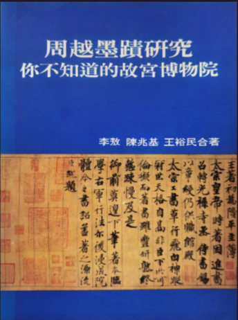

——你不知道的故宮博物院
- 李敖、陳兆基、王裕民 合著
- 桂冠圖書股份有限公司出版
- 1997 年 6 月初版
- ISBN 957-551-981-7
這本論文集乃是作者和故宮針對一件宋朝書法而展開的筆戰戰利品，從中可瞭解故宮院長的腐敗與故宮專家的無能……
目錄
《周越墨蹟研究》序
附錄一： 為護航秦孝儀捏造歷史敗壞學風疑案致東吳大學歷史系老師 附錄二： 秦孝儀捏造歷史敗壞學風的秘密 一、 周越「王著千文跋」的重要性 二、 你不知道的故宮博物院 附錄： 故宮三次鑑定文件及書面答覆 附錄一： 有關傳「周越跋王著千文」諸問題 附錄二： 對謝委員聰敏質詢之書面答覆 附錄三： 對謝委員聰敏質詢之書面答覆 三、 中國藝術史一個斷層的重建—周越墨蹟研究 四、 周越墨蹟研究 五、 谿山行旅圖鈐印的新發現 六、 北宋錢氏家族的收藏 七、 駁〈越州石氏之謎〉 八、 快雪時晴帖鈐印的新發現---宋代官印研究一 九、 試論平安何如奉橘帖上的平海軍節度使之印-宋代官印研究二 十、 宋代三省官印粗探---宋代官印研究三 十一、 蜀素帖上的「忠孝之家」印為何人所有考 十二、 周越書法史料 後記
透過立法委員謝聰敏的書面質詢，台北故宮博物院曾針對「周越跋文」進行過三次鑑定報告或書面答覆（第三次僅短短數十字，實為搪塞之作）。我在李敖老師的指示下，曾分別撰文以反駁之，然後再由謝委員交付故宮，並要求提出答覆。在你來我往的過程中，「故宮專家」不斷出現令人難以置信的謬誤，原本以為台北故宮是一個「外行領導內行」的官僚機構，但如今才令人驚覺她根本就是「外行領導外行」！
打筆仗的好處便是彼此雙方能激發出新靈感，不過「很遺憾」的是似乎只有從中獲利，故宮專家對「忠孝之家」印的懷疑使我寫成了〈豁山行旅圖鈐印的新發現〉一文；對「中書省印」的懷疑則使我寫成了〈快雪時晴帖鈐印的新發現〉等一系列有關宋代官印的論文。而本書所有文章也幾乎都是和故宮打筆仗的「戰利品」，所以這本論文集的完成，實應感謝故宮專家，感謝他們的紕漏百出，感謝他們的顢頇無能。
〔摘錄自王裕民：〈你不知道的故宮博物院〉一文〕